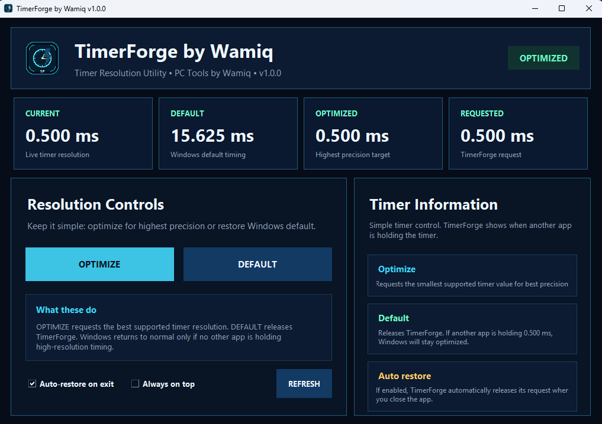
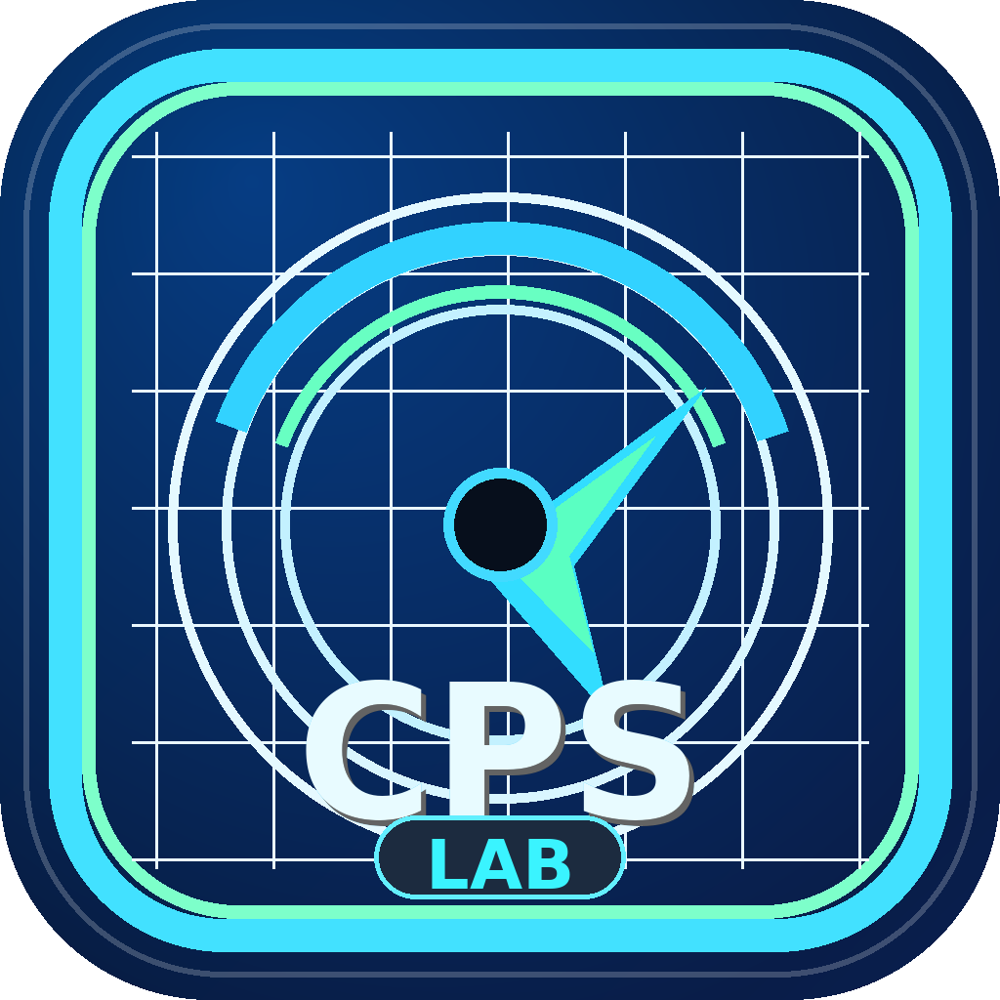
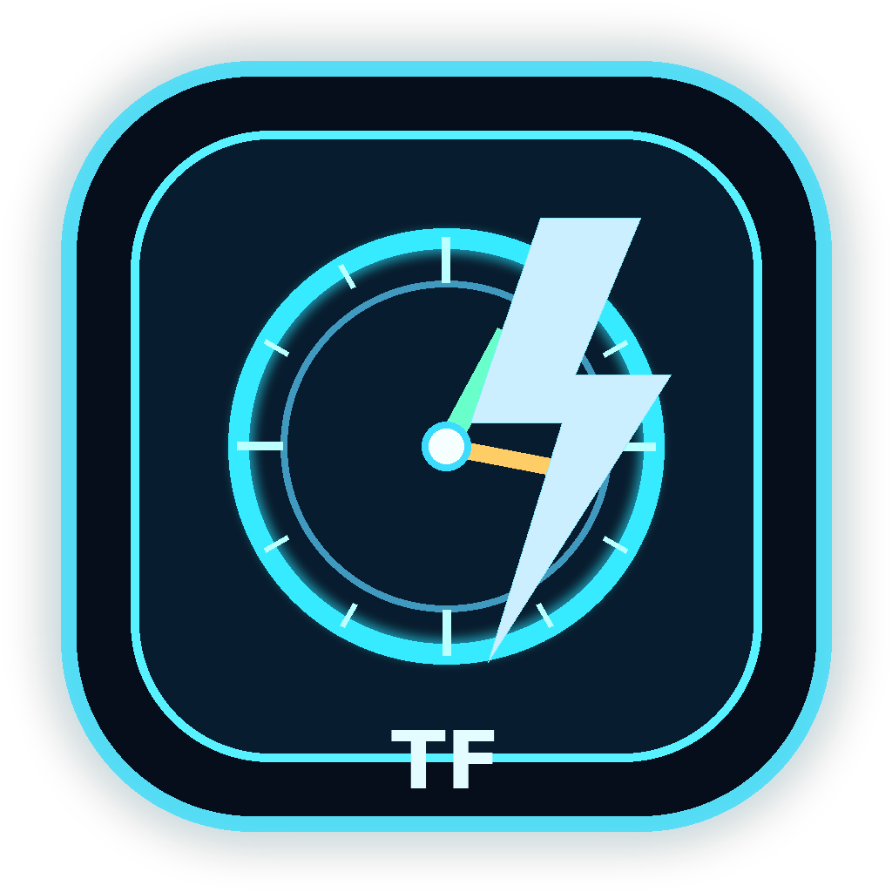
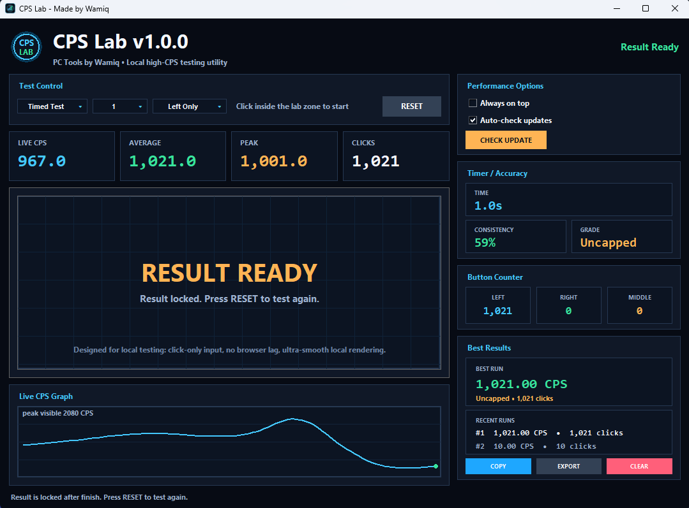

Available
LightClicker
Fast Windows autoclicker with Turbo mode, Toggle/Hold mode, custom hotkeys, saved positions, coordinate controls, and emergency stop.
Download LightClickerClean Windows utilities
A focused collection of lightweight desktop utilities for speed, testing, control, and everyday PC workflows. Each app stays separate, stable, and update-safe.

PC Tools by Wamiq keeps every utility independent while sharing one polished design language, professional installer flow, and official download hub.
Fast Windows autoclicker with Turbo mode, Toggle/Hold mode, custom hotkeys, saved positions, coordinate controls, and emergency stop.
Download LightClicker
AvailableLocal CPS testing utility with timed tests, live stats, peak CPS, consistency, rank results, best runs, and smooth local rendering.
Download CPS Lab
AvailableWindows timer resolution utility with simple Optimize and Default controls, live timer display, auto-restore, and separate updates.
Download TimerForgeA future utility for controlled personal automation, productivity shortcuts, and safe macro workflows.
Coming laterLightClicker is a compact Windows autoclicker built for clean controls and practical use. It supports Windows Turbo mode, Precision mode, Low CPU mode, Toggle/Hold activation, saved positions, screen picking, and update checking.
CPS target
Accepted clicks depend on Windows, hardware, permissions, and the target app.CPS Lab is a local Windows CPS tester made for smooth click-speed testing without browser lag. It includes click-only tests, live CPS, average CPS, peak CPS, total clicks, button counters, rank results, and best-run history.
CPS testing
Built for direct Windows testing.TimerForge shows the current Windows timer resolution and gives simple control over high-precision timing. Use Optimize to request the best supported timer resolution, then Default to release TimerForge when finished.
ms target
Supported values depend on Windows and hardware.Real interface previews for each app, kept clean and readable.


Install only what you need. Each tool has its own release and update file behind the scenes.
PC Tools by Wamiq is intended for lawful productivity, testing, accessibility, performance checking, and personal workflows where automation or timing control is allowed. Do not use these tools for cheating, spam, abuse, bypassing protections, or violating rules of third-party services.